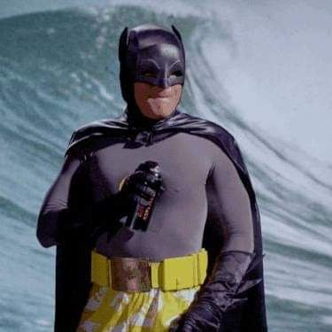

Jeg heter Backman. Jeg er en helt som beksytter byen mot krimminalitet om natten.
Jeg er ikke en klassisk helt. jeg er mer av en anihelt som mener at den eneste måten å stoppekrimminalitet er å drepe de verste krimminele (som mordere) og dermed skape frykt i det krimminele sammfunnet.
I denne nettsiden så skal jeg fortelle om hvordan jeg ble en helt, hva kreftene mine er og kanskje litt mer.
Jeg var en helt normal person i Boston, USA jeg hadde et normalt liv og hadde en normal og egentlig ganske kjedelig jobb til jeg en dag så en svær man plage en dame.
Jeg brydde meg ikke så mye om det og fortsatte å gå helt til jeg hørte et skrik.
Skriket hadde kommet fra der damen og mannen hadde vert for noen sekunder siden.
Jeg løp bort også at mannen prøvde å rane damen og når jeg prøvde å hjelpe henne så løftet han meg opp og kastet meg ned på kneet sitt sånn at jeg brakk rygen.

Når jeg våknett opp på sykehuset så fortalte doktoren meg at jeg bare så vidt hadde overlevd og at mannen hadde angreped damen etter meg og hadde endt opp med å drept henne når hun hadde prøvd å rømme.
Etter det så begynte jeg å trene og nå sloss jeg mot kriminelle som Backman og jeg brekker ryggen til alle de verste kriminelle.
Dessverre så var jeg fortsatt ikke sterk nok selv etter all treningen til å brekke ryggen til en person. Så som hjelp så bruker jeg en spade
> 
Nå som du vet hva bakhistorien min er så er det på tide at du vet om kreftene mine.
Egentlig så er jeg en forfatter jeg har skrevet en del bøker.
Jeg heter egentlig
Hvis du lurer på bøkene mine så er det en link til dem her.
Det er disse bøkene som hjelper meg å sloss mot kriminlitet.
Hvis du lurer på hvordan så bare prøv å leve et dobeltliv et i en uke og du vil se hvor avanskelig det kan være.
Jeg bruker bøkene for å gjøre å leve et dobeltliv enklere.